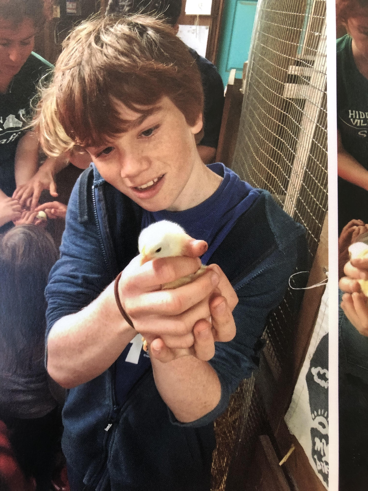
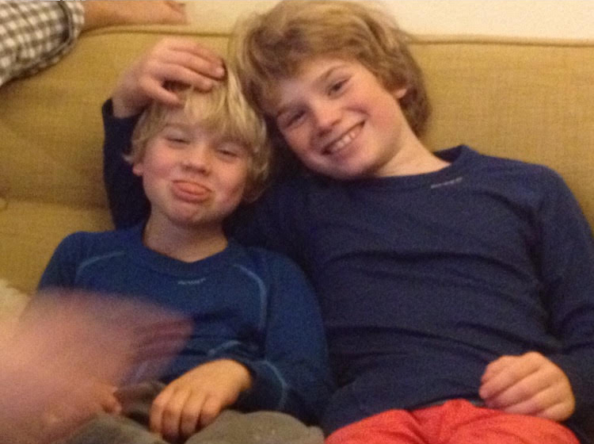
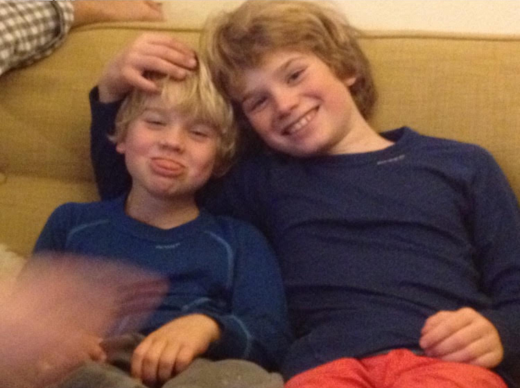
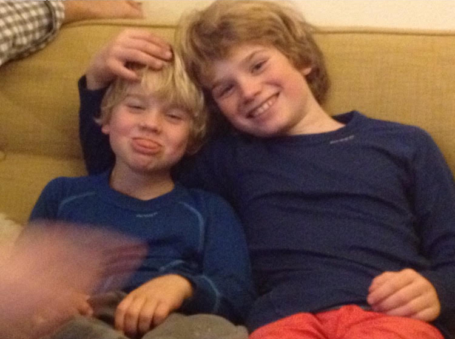

People who are effective and interested, affect and advance. Be antifragile.
Hello, welcome to my public web ui. I am Cal Day, a 21 year old male from Canada and the USA. I enjoy effective problem solving, and systematization - currently within the domains of manufacturing, software, business, finance, and health. I'm an optimist, especially towards radical self-growth.
My goal character traits:
interested, active, effective, prolific, antifragile, integrous, optimistic, autonomous, logical,
radically volatile.

 



